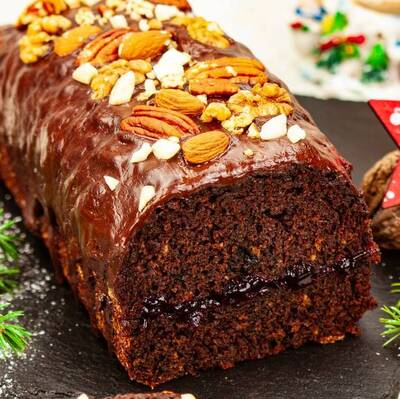

Gingerbread Recipe
time:
- preparation time: 30 min
- baking time: 45 min
ingredients for cake:
- cake flour: 320g
- butter: 100g
- milk: 250g
- superfine sugar: 150g
- honey liquid: 60g
- eggs: 2 medium
- plum jam: 80g
- cocoa: 10g
- gingerbread seasoning: 20g
- baking soda: 2 teaspoons
ingredients for glaze:
- plum jam: 140g
- dark chocolate: 1
- sweet cream 30%: 80ml
- nuts: to sprinkle
recipe for cake:
- In small pot, we need to add butter, honey, plum jam, cocoa, gingerbread seasoning
- We need to mix everything over low heat, to melt the butter and make one. Dont boil ingredients, if butter melts, just turn off everything and cool it down.
- Next we need another small pot. We have to add milk and sugar inside. We need to melt sugar in milk, again not boil. After procedure we need to cool it.
- Then in bowl we need to sieve flour and mix it with baking soda. Now we have to add colled milk and first mass and with eggs we mix everything with mixer.
- Now we need a form i use 11x30 cm, spread with butter, then i lined it with paper. We need to bake with top/down function with 170°C. After 40 min we need to check on cake until i think max 45 min.
- We can make glaze with chocolate and cream. Additionally we can add jam in the middle. And dont forget about nuts.